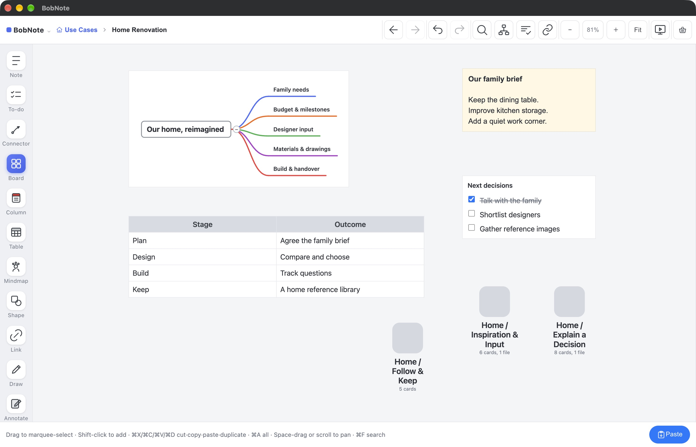
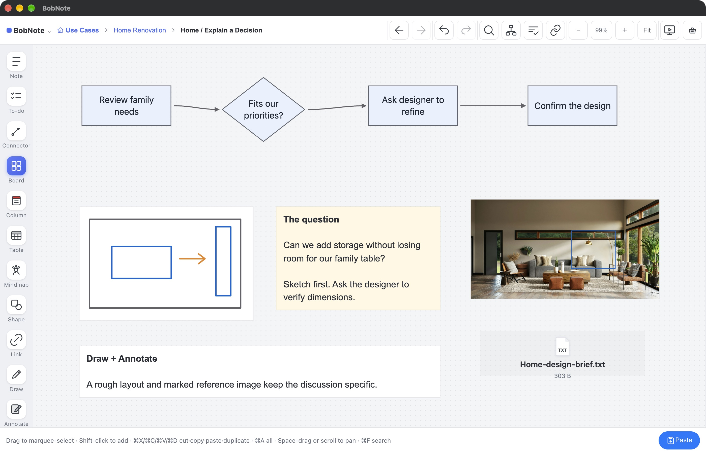
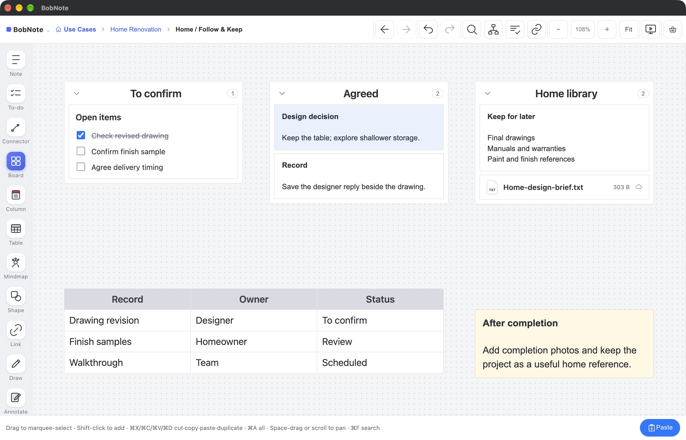

USE CASES / HOME RENOVATION
A home that works
for our family.
A homeowner’s project: plan the work, collect inspiration, explain a design choice, and keep the records that remain useful after completion.
Fictional project · Real BobNote product screens · Select an image to enlarge
01 / PLAN
Start with how the family wants to live.
Create a project Board. Use a Mindmap to lay out family needs, budget, people and milestones. Keep a short brief and the next decisions beside it.
The benefit: a clear starting point for family conversations and designer meetings.
Board · Mindmap · Note · Table · To-do

02 / COLLECT
Give every reference a reason.
Import inspiration images and arrange them side by side. Record what the family likes. Use Columns to separate essential needs from ideas to explore, and keep the source link and a personal voice memo close by.
The benefit: useful comparisons, not a folder of unexplained pictures.
Image · Column · Note · Link · Audio

03 / DECIDE
Make the reasoning visible.
Keep the family’s dining table or add more storage? Use Shape and Connector cards to show the review process. Sketch an arrangement with Draw and mark the detail on a reference image with Annotate. Attach the brief for the designer to review.
The benefit: the question, evidence and next step stay together during a screen-shared conversation.
Shape · Connector · Draw · Annotate · Image · File

04 / FOLLOW & KEEP
Carry decisions through to completion.
Keep draft and agreed documents distinct. Track open questions with To-do cards and record decisions beside saved email copies, plans and progress photos. After the walkthrough, organize final drawings, manuals, warranties and material references into a home library.
The benefit: today’s project becomes tomorrow’s reference.
To-do · Column · Table · File · Note · Board

Use the same canvas to explain the project.
Present the Board, share your window in your usual meeting app, or export a PDF. Create a BobFolder when you want to keep a portable copy or continue on another device.
Mindmap and Create / Combine require Premium. Standard PDFs include a BobNote mark. Document files open according to their format and the applications on the device.
Next: a team trip from Singapore to Shanghai →